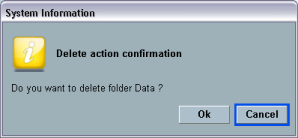
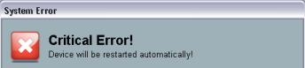

System messages give information about exceptional states of the instrument. If possible, the messages also describe necessary user interactions. The R&S CMW uses different types of messages, depending on the source and nature of the described situation.
Tooltips are short pieces of text that are displayed in a yellow, rectangular field.
If used as a system message, a tooltip usually informs about unusual measurement conditions, e.g. due to a missing signal or inappropriate measurement settings. Check the preconditions for the measurement at the beginning of each measurement description.
System information boxes describe the effects of an action that is about to be performed. The information box still allows you to cancel the action.

System information boxes use different icons, depending on the consequences of the performed action.

System error messages are displayed when the R&S CMW software needs to be restarted to continue operation. In general, the message box describes the cause of the exception and contains two buttons to shut down or restart the software.
